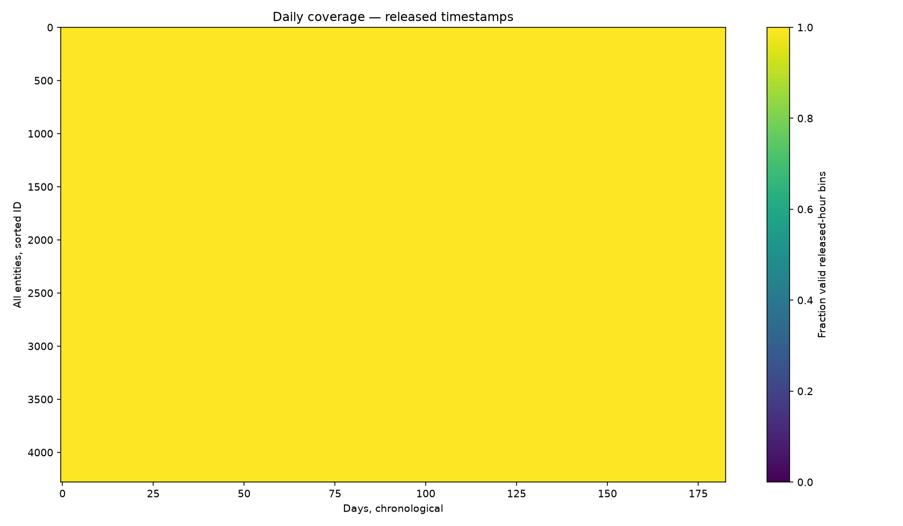
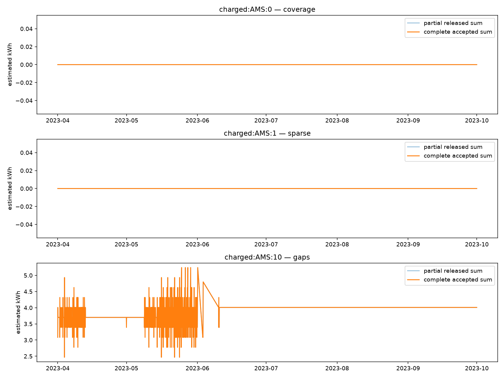
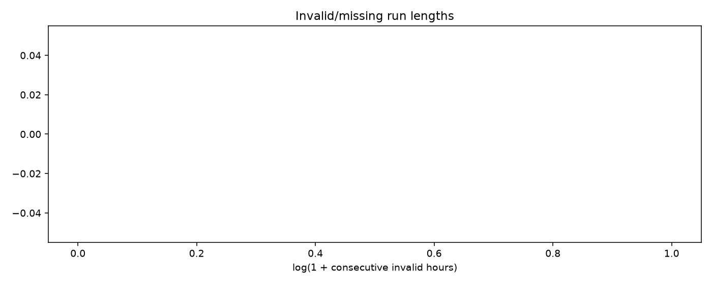

Full-period EDA is descriptive only; not used for split/model/threshold selection.
publisher processed, masks unknown
candidate only: released timezone/bin/availability require verification
No scaler/imputed label/split/features/windows were created.
{
"dataset": "charged",
"run_id": "charged_full_20261002_02",
"entities_succeeded": 4280,
"entities_failed": 0,
"scope": "full released standard scope",
"panel_status": "candidate only: released timezone/bin/availability require verification",
"strict_online_ready": false,
"upstream_status": "publisher processed, masks unknown",
"independence_status": "Shenzhen overlap not established; no cross-release native-ID mapping",
"source_sha256": "1ec9c9513b64f3f492fe73261bf08a5955c268dfb876ef0fe283d05cc5a02fab",
"code_sha256": "8cbdfbfb1009bf5a3fa0c4cbe144df1b6f50aeb6a23c3af8a57d685a733684f2",
"runtime": {
"pandas": "3.0.1",
"numpy": "2.5.3",
"pyarrow": "25.0.1"
},
"totals": {
"input_rows": 18797760,
"exact_duplicates": 0,
"conflicting_timestamps": 0,
"malformed_timestamps": 0,
"negative_values": 0,
"nonfinite_values": 0,
"valid_hours": 18797760,
"invalid_hours": 0,
"zero_hours": 6936073
},
"reconciliation_pass": true,
"panels": [
"data\\processed\\charged\\charged_full_20261002_02\\AMS_hourly_candidate.parquet",
"data\\processed\\charged\\charged_full_20261002_02\\JHB_hourly_candidate.parquet",
"data\\processed\\charged\\charged_full_20261002_02\\LOA_hourly_candidate.parquet",
"data\\processed\\charged\\charged_full_20261002_02\\MEL_hourly_candidate.parquet",
"data\\processed\\charged\\charged_full_20261002_02\\SPO_hourly_candidate.parquet",
"data\\processed\\charged\\charged_full_20261002_02\\SZH_hourly_candidate.parquet"
]
}4280 entities; coverage is file validity, not original-observation proof.

Invalid hours: 0; valid zero hours: 6,936,073.

Up to256 evenly spaced valid bins per entity, fixed deterministic rule; not full-distribution quantiles.

Coverage changes can drive totals; not a complete metered demand series.

Only validity masking/aggregation; no imputation, scaling or outlier removal.

Released clock only; timezone and DST semantics unverified. Weighted across valid entity-hour bins.

0 invalid runs; file missingness only, not hidden upstream imputation.

Tổng ngày trên các giờ có giá trị; chưa phải tổng energy ngày đủ coverage. Không dùng để chọn cohort final.

Calendar theo timestamp phát hành, timezone chưa xác minh; weighted theo valid entity-hour, không phải so sánh nhân quả.